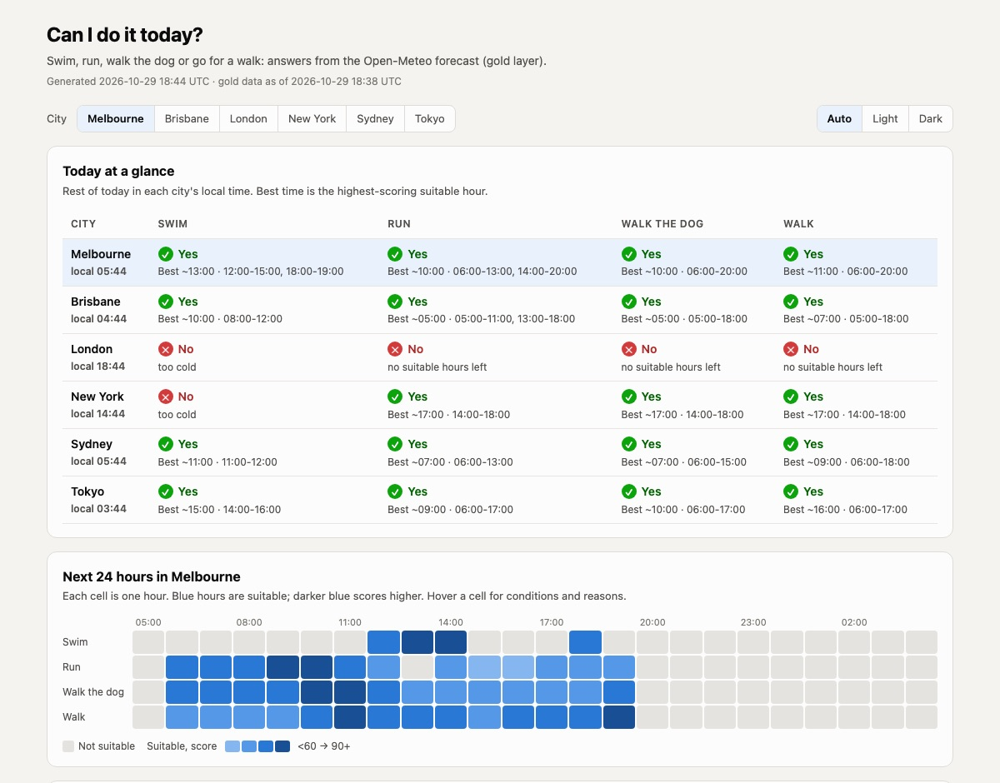

Data Engineer assignment · AI-assisted build
From a public weather API to plain answers: “Can I swim today in Melbourne?”, “When can I walk my dog?”, built as a bronze → silver → gold pipeline on Airflow and PostgreSQL, running entirely on a laptop.
Temperature, rain, wind, sunrise/sunset
Melbourne, Sydney, Brisbane, London, New York, Tokyo
Every table versioned and audited
docker compose up -d
The brief
Build an end-to-end pipeline on the Open-Meteo Forecast API using a medallion architecture that runs locally.
Technologies
Each piece does one job; nothing needs a cloud account or a licence.
TaskFlow API, dynamic task mapping (one task per city), Datasets for data-aware triggering, retries, Connections store.
JSONB for raw payloads, set-based SQL transforms, partial unique indexes, triggers, views. Also hosts Airflow's metadata DB.
Two services, health checks, named volume for data, bootstrap scripts for DB, admin user and connection.
requests for the API, psycopg2 via Airflow's PostgresHook. Config-driven table specs instead of copy-pasted SQL.
Free, keyless forecast API: hourly and daily variables, IANA time zones, 7-day horizon.
Generated report with zero external dependencies: opens offline, light and dark mode, works on a phone.
Medallion architecture
Each layer is owned by its own DAG and triggers the next one the moment its data lands.
Bronze layer
One table per pipeline, one row per city per run. Nothing is parsed, so silver can always be rebuilt from here.
payload (JSONB): the full API responserequest_params, source_endpoint, http_status_code, extracted_atrecord_hash of the forecast content (ignores volatile fields)dag_id, dag_run_id, task_id, logical_dateextract is mapped over the city list: 6 parallel API calls with retriesload_bronze writes all cities in one transactionSchedules: temperature, rain and wind hourly; sunrise/sunset daily.
Silver layer
JSON arrays are flattened into one typed row per city per hour or day, with units in the column names.
jsonb_array_elements with ordinality, cast to NUMERIC, SMALLINT or TIMESTAMP. Local and UTC time from the IANA zone, so daylight saving is handled correctly.
A newer forecast only creates a new version when the values change. One wind update changed 111 hourly values; the other 57 were left alone.
etl_load_log records each bronze row processed (inserted / closed / unchanged). One transaction per bronze row. The load fails if the API changes a unit.
| Table | Grain | Example columns |
|---|---|---|
temperature_hourly | city × hour | temperature_c, apparent_temperature_c, dew_point_c |
rain_hourly | city × hour | precipitation_mm, precipitation_probability_pct |
wind_hourly | city × hour | wind_speed_kmh, wind_direction_deg, wind_gusts_kmh |
sunrise_sunset_daily | city × day | sunrise_local, sunset_local, daylight_duration_s |
*_daily (3 more) | city × day | max / min / sums / dominant direction |
Gold layer
Each hour is scored for four activities against explicit, editable rules. The results roll up into windows and a yes/no answer per day.
| Activity | Feels | Rain chance | Wind / gusts |
|---|---|---|---|
| Swim | 22–38°C | ≤ 20%, dry | 20 / 35 km/h |
| Run | 4–26°C | ≤ 40% | 30 / 45 km/h |
| Walk the dog | 2–27°C | ≤ 50% | 35 / 50 km/h |
| Walk | 4–30°C | ≤ 50% | 35 / 55 km/h |
Plus daylight, using sunrise and sunset from silver. Each hour is scored 0–100, and unsuitable hours record why: too cold, rain likely, too windy, dark…
activity_hourly: hour × city × activityactivity_daily: can I?, suitable windows, best window, best hour, main blockeractivity_today: view of the rest of today in each city's local time, computed at query timecan_i_swim_today, can_i_go_for_a_run_today, can_i_walk_my_dog_today, best_time_to_swim_today, when_can_i_walk_todayData flow & orchestration
Only bronze runs on a clock. Every later layer is triggered by an Airflow Dataset event when its input tables change.
| DAG | Trigger | Reads | Writes |
|---|---|---|---|
open_meteo_temperature · _rain · _wind | @hourly | API | bronze.*_raw |
open_meteo_sunrise_sunset | @daily | API | bronze.sunrise_sunset_raw |
open_meteo_silver | any bronze Dataset | new bronze rows | 7 silver tables + load log |
open_meteo_gold | silver Datasets | current silver | activity_hourly → activity_daily |
open_meteo_report | gold Dataset | gold | reports/latest.html |
From API call to updated report, measured end to end under Compose.
Retries and re-runs never duplicate data: delete-free SCD2 merges and the silver load log.
DAGs reference the loopiq_postgres Airflow Connection, stored encrypted with a Fernet key.
Auditing & history
The same column groups on every bronze, silver and gold table.
row_start_date, row_end_date (9999-12-31 while open), is_current; a partial unique index allows one live version per key
created_at, created_by, row_updated_at (set by a trigger), updated_by
is_deleted, deleted_at, deleted_by, delete_reason; enforced by a CHECK constraint
dag_id, dag_run_id, task_id, record_hash, source_bronze_id …
Example: Sydney temperature after a run, a second run, and a re-run of the second
run 6gppZvzK 17:43:10 → 17:43:45 closed when the next version arrived
run vHaiFb5m 17:43:45 → 17:43:49 soft-deleted: superseded by re-run of the same dag_run
run vHaiFb5m 17:43:49 → open currentEnd result
Live answers from gold on Friday 30 October, as plain SQL or in the generated report.
SELECT answer FROM gold.can_i_swim_today
WHERE location_name = 'Melbourne';
reports/latest.html: answers for every city, a 24-hour heatmap, 48-hour conditions and a 7-day outlook.
How to deploy
Needs Docker with Compose and at least 4 GB of memory for Docker.
git clone https://github.com/RashbirSingh/open-meteo-Medallion-Architectur-ETL.git
cd open-meteo-Medallion-Architectur-ETL.env from the template
cp .env.example .env
# set passwords + a Fernet key (command in the file)docker compose up -dhttp://localhost:8080 with the admin login from .env. DAGs start unpaused; trigger the four ingestion DAGs to fill everything right away.
psql -h localhost -U postgres -d loopiq \
-c "select * from gold.when_can_i_walk_today"
open reports/latest.htmldocker compose down keeps the data volume; add -v to wipe it.
On first boot, Postgres creates the databases and schemas, and Airflow migrates, creates the admin user and stores the loopiq_postgres connection.
Engineering notes
The Docker VM had 2 GB, and Airflow's API server workers alone took ~800 MB. Cut web workers to 1 and parallelism to 4, and documented the 4 GB minimum.
Airflow's safe mode skips files that never mention “airflow” and “dag”. Factory-built DAG files got a docstring.
It was encrypted with a random per-container Fernet key. The key is now pinned in .env, and the connection is bootstrapped on startup.
Ported airflow.sdk imports to TaskFlow 2.x and reset the metadata DB. The warehouse was untouched because it is a separate database.
Next steps
Add Open-Meteo's Marine API (sea temperature, waves) and UV index as new bronze pipelines.
pytest on the SQL builders, data-quality checks (row counts, null rates) as Airflow tasks.
CeleryExecutor or KubernetesExecutor, a secrets backend instead of .env, dbt for the SQL models.
Thank you. Questions?